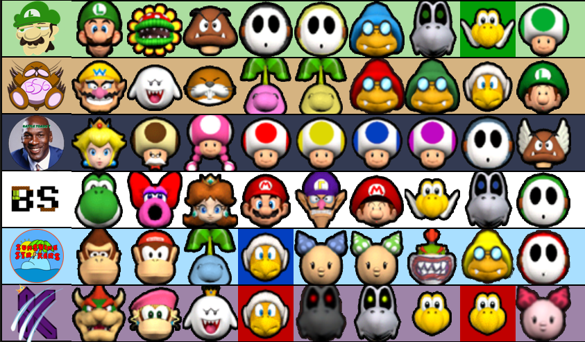

Welcome to the Pianta Baseball Network! Home to all sorts of baseball related stats!
The fuel for this site is nothing more than the post match JSON files you can find in documents/projectrio/statfiles
So make sure the submit them after every official game!
UPDATE: Due to some changes in the new Rio update individual character ERA, and Innings Pitched are no longer being updated.
Player(Team) ERA and Innings Pitched are however still updating correctly.
I hope to add this back at some point if I figure out how.
